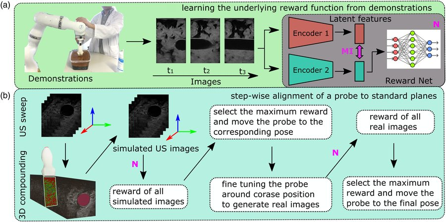
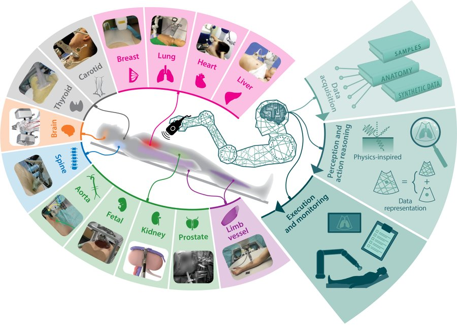
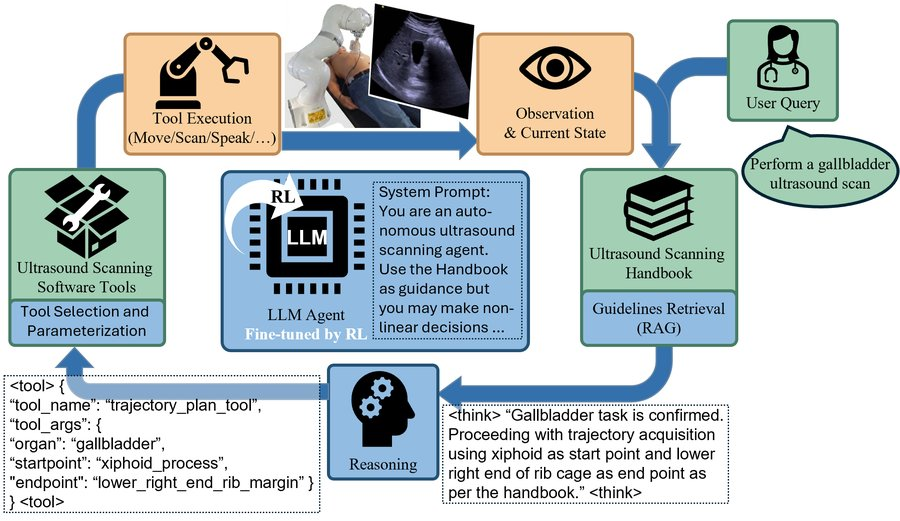
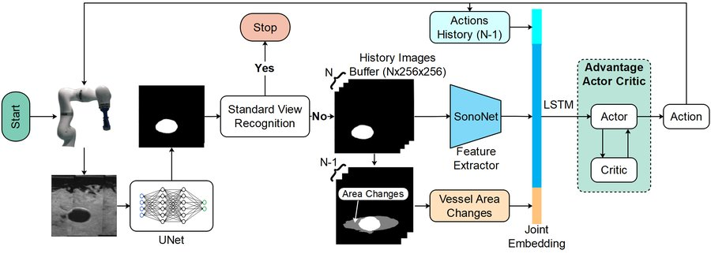
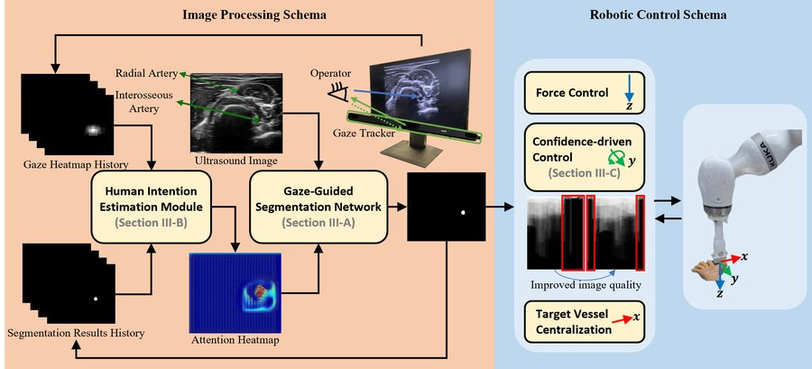
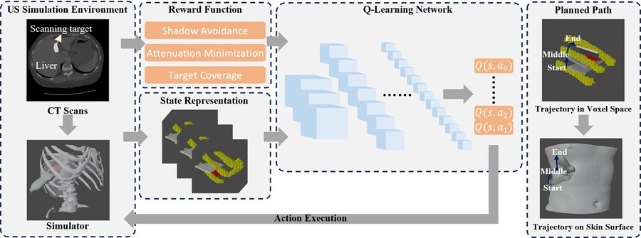
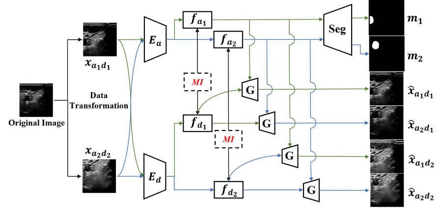
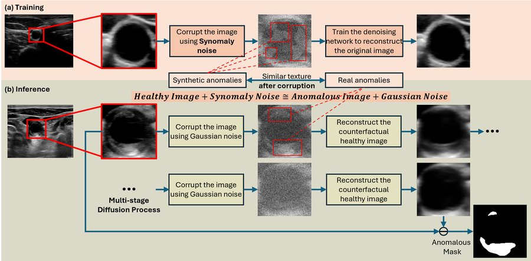
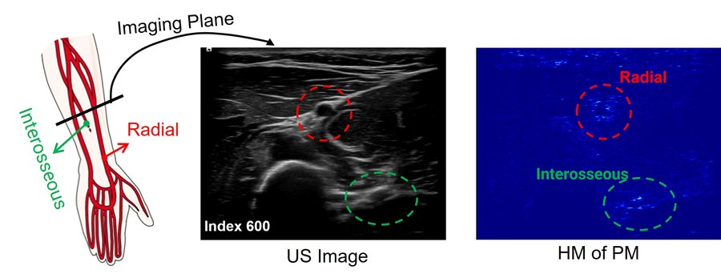

IJRR 2024

I am a postdoctoral researcher at the Chair for Computer Aided Medical Procedures (CAMP), Technical University of Munich (TUM), Germany, where I lead the Robotics and Ultrasound (RobUSt) Team.
My research lies at the intersection of medical robotics, machine learning and imaging. The overarching goal is to develop intelligent and trustworthy robotic ultrasound systems that integrate perception, reasoning and action for both diagnostic and therapeutic applications.
I received my Ph.D. from TUM in 2026 under the supervision of Prof. Nassir Navab. Before that, I obtained my M.Sc. in Robotics, Cognition, Intelligence at TUM (2021) and my B.Eng. in Mechatronics at Tongji University, Shanghai, China (2018).
* equal contribution









| Year | Type | Title | Student | Outcome |
|---|---|---|---|---|
| 2026 | Master Thesis | Intelligent Agent-Guided Optimization of Ultrasound Imaging Parameters | Yingtai Xu | Finished |
| 2026 | Master Thesis | Intercostal Robotic Ultrasound Imaging Using Reinforcement Learning | Mustapha Daly | Finished |
| 2026 | Master Thesis | From Freehand Demonstrations to Autonomous Robotic Ultrasound: An Anatomy-Anchored Learning Framework | Fangxu Han | Submitted to a journal |
| 2026 | Master Thesis | Ordinal Severity Modelling and Mitigation of an Age-Related Confound in Automated Detection of Severe Cerebral Edema | Tim Bruckdorfer | Finished |
| 2026 | Master Thesis | Scanning While Imagining: A Scene-Graph World Model for Robotic Ultrasound Navigation | Shuai Chen | Submitted to a conference |
| 2026 | Guided Research | SurgOnAir: Hierarchy-Aware Real-Time Surgical Video Commentary | Jingyi He | Accepted at MICCAI 2026 |
| 2026 | Master Thesis | Counterfactual Flow: Unsupervised Anomaly Detection in 3D via Lesion Injection | Yaxuan Dai | Submitted to a conference |
| 2026 | Guided Research | From Scanning Guidelines to Action: A Robotic Ultrasound Agent with LLM-Based Reasoning | Yiping Zhou | Accepted at MICCAI 2026 |
| 2026 | Guided Research | Mask-to-Restore: Self-Supervised Ultrasound Despeckling via Inpainting | Yingtai Xu | Submitted to a conference |
| 2025 | Guided Research | From Deterministic to Stochastic Synomaly: Multi-Stage Guided Diffusion for Generalizable Unsupervised Anomaly Localization | Yaxuan Dai | Submitted to a journal |
| 2025 | Master Thesis | Interpretable Ultrasound Video Captioning via Language-Supervised Visual Grounding | Cameron Simoleit | Finished |
| 2025 | Bachelor Thesis | Unsupervised Anomaly Detection in Medical Imaging via Deformation Recovery Models | Simon Seyfert | Finished |
| 2025 | Bachelor Thesis | Steering-Angle-Controlled Robotic Ultrasound for Spinal Imaging | Larissa Manalil | Accepted at Hamlyn Symposium 2026 |
| 2025 | Master Thesis | Systematic Auditing of Machine Unlearning for Large Language Models | Yueqi Zhang | Lock-LLM Workshop, NeurIPS 2025 |
| 2025 | Master Thesis | Surrogate Modeling for Single Neurons | Qilin Chen | Finished |
| 2024 | Master Thesis | Synomaly Noise and Multi-Stage Diffusion: A Novel Approach for Unsupervised Anomaly Detection in Ultrasound Imaging | Lucie Huang | Published in Medical Image Analysis |
| 2024 | Bachelor Thesis | Simultaneous Tracking and Segmentation of Carotid Plaques | Jason Mann | Finished |
| 2024 | Master Thesis | Gaze-Guided Robotic Vascular Ultrasound Leveraging Human Intention Estimation | Yang Su | Published in IEEE RA-L |
| 2023 | Guided Research | Autonomous Path Planning for Intercostal Robotic Ultrasound Imaging Using Reinforcement Learning | Cheng Qian | Published in Scientific Reports |
| 2022 | Master Thesis | Two-Stage Deep Learning Framework for Plaque Segmentation in Carotid Ultrasound Images | Moustafa Elsharkawy | Finished |